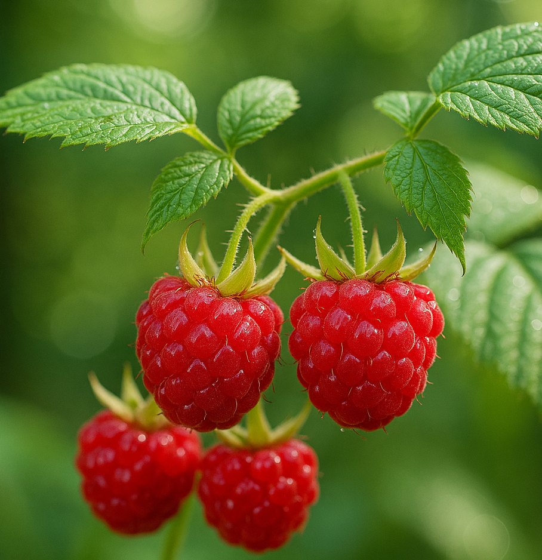

Ada®
Červenoplodá odrůda plodící na jednoletém dřevě. Má pevné, středně velké až větší plody a hodí se i pro větší výsadby.
Detail odrůdy ↗Šestnáct odrůd pro letní i podzimní sklizeň — červené klasiky, remontantní maliníky i žlutoplodé speciality.

Odrůdy plodící na jednoletém dřevě nebo poskytující opakovanou sklizeň prodlužují sezonu až do podzimu.
Červenoplodá odrůda plodící na jednoletém dřevě. Má pevné, středně velké až větší plody a hodí se i pro větší výsadby.
Detail odrůdy ↗Oblíbená remontantní odrůda s červenými, šťavnatými a aromatickými plody. Sklízí se v létě a znovu od srpna do října.
Detail odrůdy ↗Remontantní žlutá malina, která plodí na jednoletých výhonech a poskytuje bohatou, pravidelnou úrodu.
Detail odrůdy ↗Raně až středně raná odrůda s pevnými plody. Rovné výhony mají podle stanice dobrý zdravotní stav.
Detail odrůdy ↗Červenoplodá odrůda plodící na jednoletém dřevě. Pevné, středně velké až větší plody jsou vhodné i pro velkovýrobu.
Detail odrůdy ↗Vzpřímeně rostoucí odrůda s málo ostny. Červené plody jsou šťavnaté a aromatické, vhodné k jídlu i zpracování.
Detail odrůdy ↗Remontantní odrůda s oranžově žlutými plody vynikající, aromatické a lehce navinulé chuti.
Detail odrůdy ↗Osvědčené maliníky pro přímý konzum, šťávy i mražení; vedle červených je v nabídce také žlutoplodá Zlatá královna.
Klasická beztrnná odrůda se vzpřímeným růstem. Kulaté, pevné a jasně červené plody mají sladkou chuť.
Detail odrůdy ↗Letní odrůda s většími plody, vhodnými k přímému konzumu i pro výrobu šťáv.
Detail odrůdy ↗Středně velké plody velmi dobré chuti připomínají vůní lesní maliny.
Detail odrůdy ↗Klasická letní odrůda, známá také jako Rubín bulharský. Hodí se k přímému konzumu i na šťávu.
Detail odrůdy ↗Vzpřímeně rostoucí odrůda s dobrým zdravotním stavem. Sladké červené plody se hodí také na mražení a šťávy.
Detail odrůdy ↗Úrodná a mrazuvzdorná odrůda s dlouhou letní sklizní; stanice uvádí také velmi dobrou odolnost vůči chorobám.
Detail odrůdy ↗Červencová odrůda s velkými, tmavě červenými a sladkými plody pro přímý konzum i výrobu šťáv.
Detail odrůdy ↗Klasická červencová odrůda. Pevné plody dobře poslouží k přímému konzumu, mražení i výrobě šťáv.
Detail odrůdy ↗Středně velké žluté plody se dobře oddělují od lůžka a mají lehce navinulou, aromatickou chuť.
Detail odrůdy ↗Popisy slouží k orientaci. Dostupnost konkrétních sazenic a aktuální ceny vždy ověřte na webu stanice.